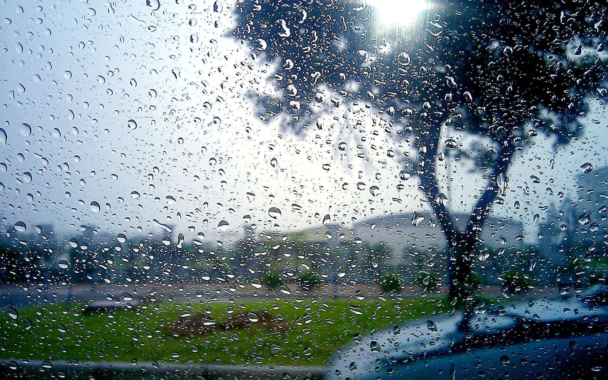

 Milli Hidrometeorologiya Xidmətindən verilən məlumata görə, axşam yarımadanın bəzi yerlərində qısamüddətli yağış yağacağı ehtimalı var. Şimal küləyi əsəcək. Havanın temperaturu gecə 21-25° isti, gündüz 32-37° isti olacaq. Atmosfer təzyiqi normadan aşağı 758 mm civə sütunu olacaq. Nisbi rütubət gecə 70-80 %, gündüz 30-40 % olacaq. Azərbaycanın rayonlarında sabah hava əsasən yağmursuz keçəcək. Lakin gündüz bəzi dağlıq və dağətəyi rayonlarında arabir yağış yağacağı, şimşək çaxacağı gözlənilir. Ayrı-ayrı yerlərdə leysan xarakterli olacağı, dolu düşəcəyi ehtimalı var. Gecə və səhər bəzi rayonlarda duman olacaq. Mülayim şərq küləyi əsəcək. Havanın temperaturu gecə 20-25° isti, gündüz 34-39° isti, dağlarda gecə 13-18° isti, gündüz 23-28° isti olacaq.
Mənbəyə yönləndir